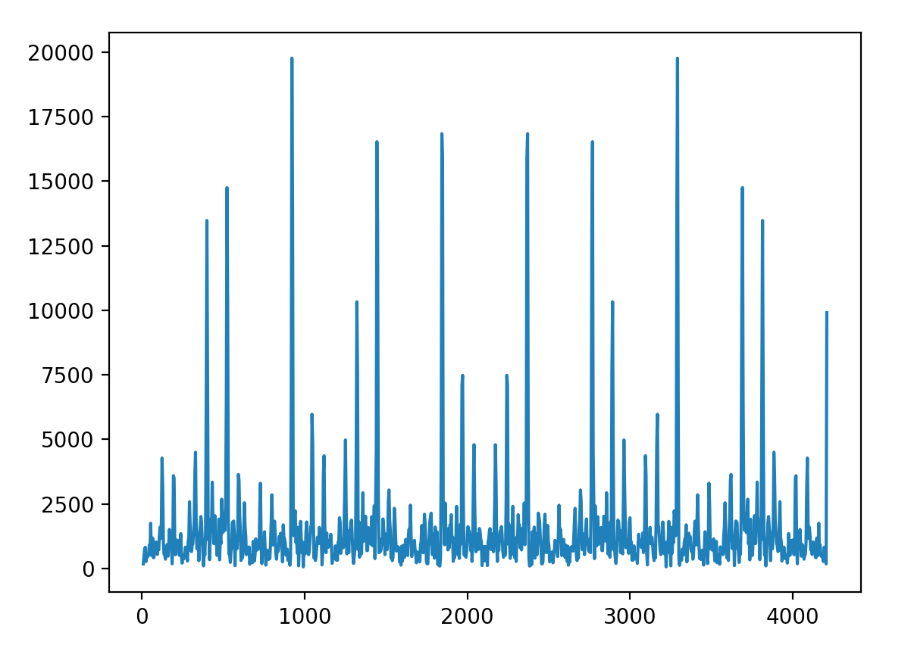

This section will involve all the technical details and design choices of this project. To not make it long and boring (and difficult to read), we will start with a system overview, and later dive deep into each components.
System Overview
System block diagramThe central controller of this system is the Raspberry Pi 4. The Raspberry Pi 4 is connected to the piTFT display, which is the only peripharal that interacts with the user. The pitch coming out of the original Otamatone system (PCB + speaker) is determined by the resistance between two sensing terminals coming out from the PCB. In order to vary this resistance (thus controlling the pitch), the RPi controls a digitpot array via I2C, and several relays via GPIO. The Analog circuitry will be discussed in detail later.
Since there is no direct correspondence between {digitpot + relay programming settings} and {frequency coming out of the speaker}, we must be able to somehow obtain this mapping. To measure the frequency coming out of the speaker, an Arduino Nano BLE 33 Sense is used for continuously measuring driving signals for the speaker and sending the base frequency over to the RPi via UART. This will also be discussed in detail later.
 System diagram bird's-eye view
System diagram bird's-eye view
Otamatone Characterization
In the beginning of the project, we did some preliminary characterizations to the original Otamatone.
- Inspect the waveform of the Otamatone speaker
- Inspect the waveform across two sensing terminals
- Measure the resistance range of the original softpot potentiometer
- Analysis of power terminals in the original PCB and manually solder terminals from the battery holder
In addition, we performed some initial testing with the relays and the digital potentiometers when those parts arrived.
Waveform of original Otamatone speaker Waveform across two sensing terminalsPiTFT for Touchscreen I/O
We used Adafruit's PiTFT plus assembled touchscreen for display output and touchscreen input. The user can choose different functions (e.g. Demo song, Calibration, Keyboard Mode, Quit) from the touchscreen and control how they want to interact with the system. The PiTFT uses the SPI interface and two GPIO pins (#24 #25) to communicate with the RPi.
Testing with the piTFT was straight-forward. We used the ball collision and also some button scripts from previous labs of this course to test the piTFT, which tests the display and touchscreen function. We had a few issues when working with the piTFT display. Initially, we did a sudo apt-get upgrade in order to install the CircuitPython library that is needed for the digitpots' driver, which overwrote the wheezy downgrade that was needed for the piTFT to function. We solved it by re-applying the wheezy downgrade patch. The error was discovered by printing out piTFT touch positions and found out they were incorrect.
Another issue was that the piTFT suddenly stopped working before our demo. This was solved after we switched to a new Pi + piTFT system, showing that it's likely a hardware issue.
 piTFT user interface
piTFT user interface
Analog Circuit
The analog circuitry is the most important part of this system. It bridges between the digital (RPi) and the analog (Otamatone) world. On a high level, the analog circuit takes some digital signals from the RPi (I2C + GPIO), and changes the effective resistance over the two sensing terminals coming out of the original Otamatone PCB. From the RPi's view, it can change the frequency coming out of the speaker by programming these peripharals via I2C and GPIO.
 Analog circuit diagram. Digital potentiometers are controlled by RPi via I2C. Relays are controlled by RPi via GPIO. These connections are not shown.
Analog circuit diagram. Digital potentiometers are controlled by RPi via I2C. Relays are controlled by RPi via GPIO. These connections are not shown.
This circuit diagram shows how the relays and the digital potentiometers are connected together. For digital potentiometers, we used four Adafruit DS3502 I2C Digital 10K Potentiometer Breakout because it is available and comes with decent driver code. For relays, we obtained a couple of 3.3V logic relays from Amazon and powered them with two AA batteries. Two resisters are used for offset because we're afraid that small resistance will lead to high current and damage the original PCB. The digital potentiometers together with relay-controlled resistors essentially enables varaible resistance control in the range of [20k, 140k] Ohms. This is roughly the range of the original softpot ribbon that comes with the Otamatone.
Initially, we also tried using the Adafruit DS1841 digital potentiometer because it has a log range rather than a linear range, and we thought that this should give us a larger range of resistance to work with. However, we noticed that the RL terminal of this chip is connected directly to ground, which should work for most applications but not our project because we have no idea what happens if there's a direct path to ground between two terminals. We tested these breakout boards in our circuit, and the pitch changes in an unpredictable manner, so we abandoned the use of this part.
Why not use 40 kOhm and 80 kOhm for larger range?
Looking at the diagram above, one may wonder why we use two 40 kOhm relay-controlled resistors instead of a 40 kOhm resistor and an 80 kOhm resistor. Technically, this alternative solution covers [20k, 180k] Ohms range, and we can therefore get a larger range to work with. This is in face our initial plan. However, we later found out that {40 kOhms + highest digitpot resistance} != {80 kOhms}. If we match the 80 kOhms resistor to be equal to {40 kOhms + highest digitpot resistance} (call it X Ohms), then {X Ohms + 40 kOhms + lowest digitpot resistance} != {X Ohms + highest digitpot resistance}. In short, we experimented with many resistance settings, and the conclusion was that the effective resistance of digital potentiometers varies when the offset resistance changes. This kind of makes sense as these digital potentiometers are active devices and we are dealing with AC current on terminals (probably the digitpots are not designed for it). Because our "adding resistors" scheme worked well, we did not spend more time investigating why the alternative solution failed.
Relays seem to be overkilling. Why not use BJT or MOSFET?
We tried BJT and MOSFET but they did not work in our preliminary testing (switch on-off the gate/base voltage and observe change in pitch). I'm not an analog person (took quite a few device classes but certainly not remembering anything now haha), and my (could be and probably wrong) explanation is that we were operating in the "linear" (this is definitely not the right term... but anyway you get the idea...) region of the transistors. But to be honest, AC is difficult to deal with, so why not use a cheap relay? I have plenty batteries to power them (wink).
We had a few other software bugs, but those are much easier to resolve than hardware bugs. Here are some of the scripts we used to test the relay + digitpot + Otamatone subsystem.
- Corner cases of settings such that resistor swap relays are switched on and off. Pitch should be the same.
- Turning the on-off relay on and off. Sound should be on/off as well.
- Sweep 10 steps in the setting space. Pitch should transition monotonically.
Getting the Base Frequency and Calibration: How to Play a Note
We used an Arduino Nano 33 BLE Sense to continuously perform FFT and send the peak frequency to RPi via UART. It samples 1024 samples from the ADC (f_samp ~= 4000 Hz), and applies the Hamming windowed floating point FFT to find the peak frequency. Initially, we developed the Arduino code and tested with a Sine wave of varied frequencies, and everything was fine. However, things have gone wild when we tested it on the Otamatone. The reason being that we forgot there are harmonics when sampling non-sinusoidal wave... To counter this effect, we applied the Harmonic Product Spectrum (HPS) to get the base frequency. We also limited the peak-searching range to be within a frequency window. The problem still persisted after all these measurements, but the percentage of wrong readings from the Arduino has significantly decreased. With that, we applied some more heuristics on the RPi side to counter this effect.
The RPi performs the calibration function. It divides the programming range (which is abstracted as "pot_val", it takes into account both the relay switch and digitpot programming) into equally-spaced steps. For each pot_val, the RPi first programs the analog circuity subsystem, then it waits a while, and then reads 3-5 readings reported by the Arduino. After some heuristics to counter the harmonic issue, it saves the pot_val -> frequency mapping into a configuration file. Once we have this configuration file, playing a note is simple: we find the frequency of the note, find the closest two frequencies from the config file, and interpolate for the pot_val setting for this note. If we want to be more precise, we can simply increase the number of sweep steps :) The calibration function was robust in our test when we applied these heuristics:
- Calibration program reads 3-5 reported peak frequency from the Arduino, and divides max value in this group by 2 if the max value is larger than 1.5X min value
- Calibration program re-reads 3-5 peak frequency if any value in this group is off by 5% when compared to average
- Frequency should change monotonically with respect to pot_val. If not, try dividing local max by 2
- If still not monotonic after applying all these techniques, re-start the calibration program
These heuristics may not be the smartest, but they worked in our testing. Somethings the error is small and a human can easily go into the config file and fix the error, while the calibration program could run for 1-2 minutes (which seems to be slow). We believe this is a trade-off we'll need to do because we want to make this an embedded device, and we cannot assume the user is able to poke into the config file and fix things.
 Frequency spectrum without HPS. x-axis is Hz Frequency spectrum with HPS up to 6. x-axis is HzSoftware Overview
Last but not least the software part! We leveraged OOP scheme to increase code maintainability and reusability, which helped us a lot in our development (we typically resolve SW bugs within 5-10 minutes). We developed our software library as we build our hardware system, and we had scripts to test subsystems as we move forward. Sometimes we introduced bugs into the hardware system during re-assembly, but we were able to run some existing test scripts to quickly locate and resolve the problem.
Hardware interactions are wrapped into classes. Each class that controls hardware is programmed with singleton pattern. We had a class that reads and process serial data from the Arduino. We had a class that controls the digital potentiometers and the relays to abstract the pitch-control interface, and we had a class that completes the music note -> targeted frequency -> estimate pot_val setting -> play note steps. All source code is available on GitHub. You can click the "source code" button on the top right corner of this page.